Ventura County Fair 2011
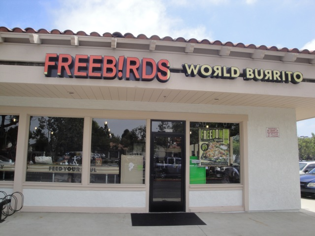
All right. Today was the day we always go to the Ventura County Fair, and I am sad to report that this is by far the worst year the Ventura County Fair has had. =( How so? We'll go into detail about why throughout the update. Anyways, our day started with lunch at Ventura's newest Mexican Resteraunt, Freebirds.
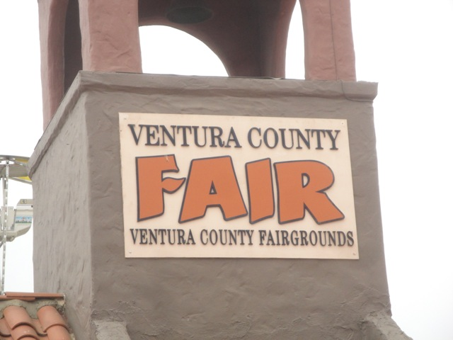
Well, we're here. Let's see what caused the Ventura County Fair to go so bad this year.
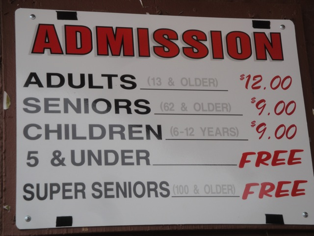
HOLY SH*T!!!!!! $12.00 ADMISSION!!!!? Yeah. The Fair is ripping everyone off this year. Back in 2009, general admission to the Ventura County Fair was $5.00, and every Wednesday was Dollar Day. Here in 2011, they jacked up the price to $12.00 and they only had ONE Dollar Day as well as far less oppertunities for a discount. Yeah. That's ripping people off!!!! And it's f*cking pissing me off!!!!! And it's not just the admission that got jacked up!!!!! Rides are far more expensive as it went for $0.25 per ticket to $0.75 per ticket!!! The rides cost more tickets!!!! 9 F*CKING TICKETS FOR ROCKIT!!!!!!! Bungee Jumping went from $35 to $40, and even the food is more expensive, going from $3.75 to $5 to get A LIGHT SNACK!!!!!! And that wouldn't even be so bad except they're not even putting the money back into the f*cking fair this year!!!!!I bet you anything that in 2012, they'll cut the free bus rides and raise the parking price to $30 so they would save tons of money not paying for gas for the buses and not paying the bus drivers salary and make tons of money from everyone paying $30 to park. THEY WOULD DO THAT!!!!! THOSE CHEAP BASTARDS WOULD SO DO THAT!!!!!!!!!!
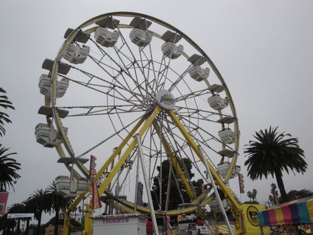
And continuing with the theme of the theme of the Ventura County Fair being greedy little Bronfmans, they sold out to advertising worse than Six Flags. I repeat. WORSE THAN SIX FLAGS!!!!!!!!!!!!!!!
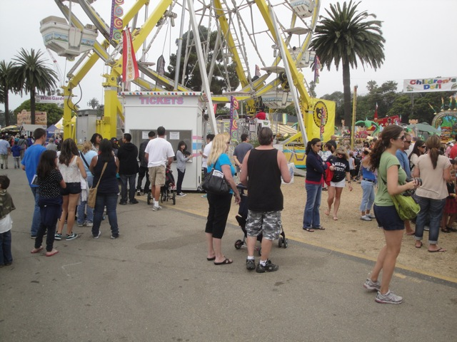
Uh oh. Better put the camera away. There are FAR too many people here to be taking pictures. Put it away before you cause Final Destination 3!!!!!
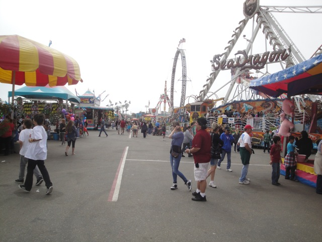
Wow. Continuing with the fairs cheapness and greed, they cut back on A LOT of Fair Rides. There's no Mega Drop, and no Xtreme. But wait, what's that I see in the background!!!!! Could it be? Did they really bring it back!!!?
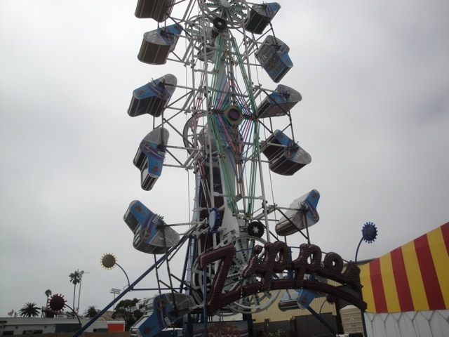
Well they brought back the Zipper. So this should save the fair. Shouldn't it? WRONG!!!!!!!!!!!!!!! THIS WAS THE WORST RUN ZIPPER I HAVE EVER SEEN IN MY LIFE!!!!!! IT BARELY FLIPS, AND IT HAS NO WHIP AT ALL WHATSOEVER!!!!!!!! GREAT VENTURA COUNTY FAIR, YOU FINALLY BRING BACK THE GOD DAMN ZIPPER AFTER 6 YEARS OF ABSCENCE, AND YOU RUIN IT!!!!!!!!!!! SHAME ON YOU VENTURA COUNTY FAIR!!!!!!! SHAME ON YOU!!!!!!!!!
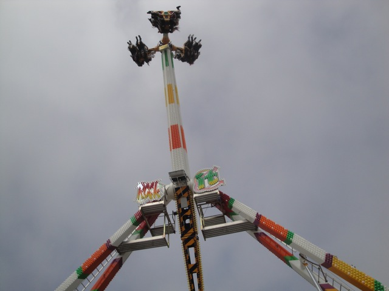
Though on the bright side, they did have this cool looking ride called Rockit, which looks like the lovechild of Bling and an Evolution.
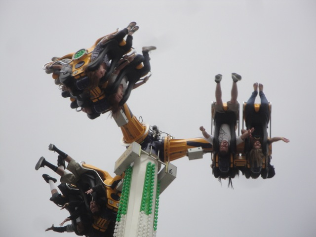
It was a really fun ride, but it just isn't worth 9 tickets!!!! It's fun, just not $6.75 fun!!!!!!!
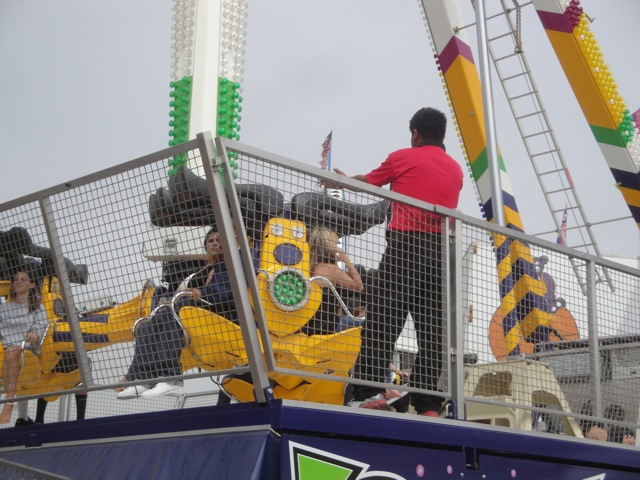
Another bad thing about the fair this year. The employees SUCK!!!!!! They don't smile, they don't make eye contact, they don't even speak to you. When getting into the fair, I said "One ticket please." The person at the counter just grunted and held out their hand. They didn't even say how much the price was. After I paid the insane price, they just gave me a ticket, grunted and pointed towards the entrance all with a look on their face that said "Get the f*ck out of my sight." Also, when getting on Rockit, apparently, you give them your tickets when you get in line, not when you get on the ride. Instead of saying "Sir, I need your tickets." They just held their leg so I couldn't pass, held out their hand and grunted angrily, all with a very unpleasent look on his face.
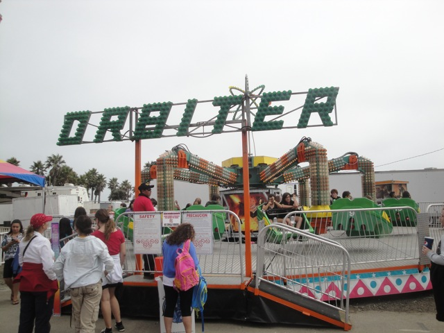
They also had this ride called Orbiter that looked cool. But I didn't ride it as I didn't want to pay $4.50 to ride it!!!
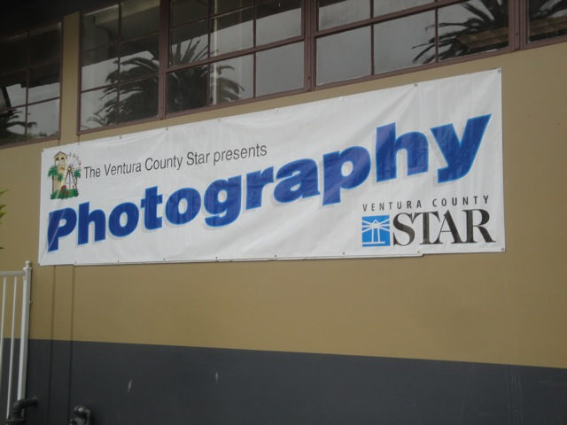
They had some really good photos in there.
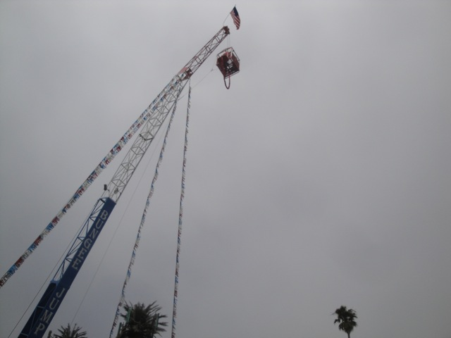
Well, all the rides may suck this year, but hey!!! At least we still have bungee jumping!
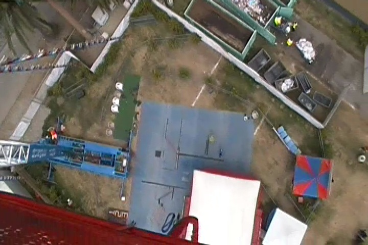
The view you get from the top of the crane before you jump.
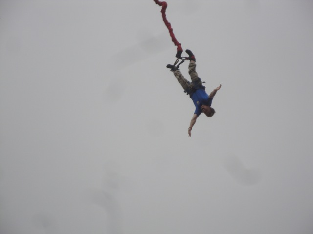
"GRAVITY KICKS ASS!!!!!!!!!!!!"
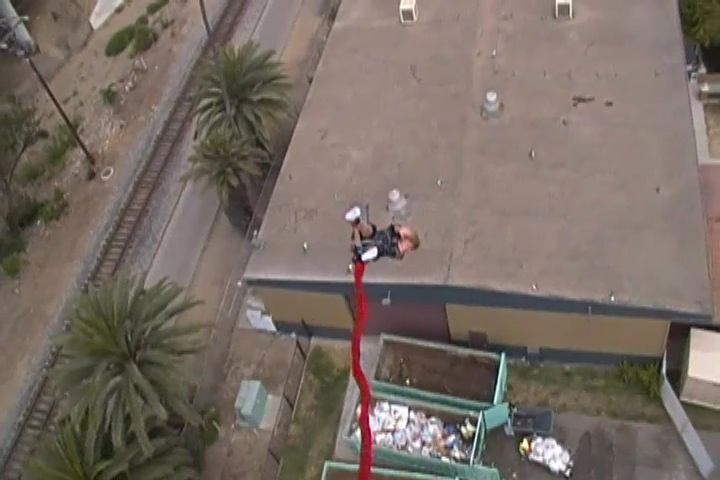
This was awesome and actually worth the money!!!! Looking foreword to bungee jumping at the Bridge to Nowhere next year.
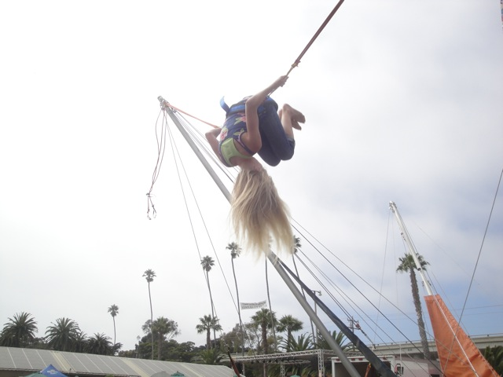
"Meh!!! Who needs Bungee Jumping when we have the Bungee Trampoline instead!!!"
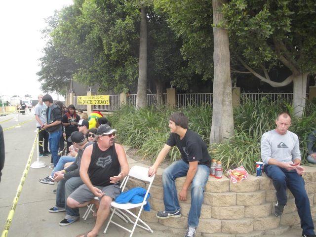
And this year, we saw both Pat Benetar and Three Days Grace in concert, front and center. As you can tell by how early we are in line.
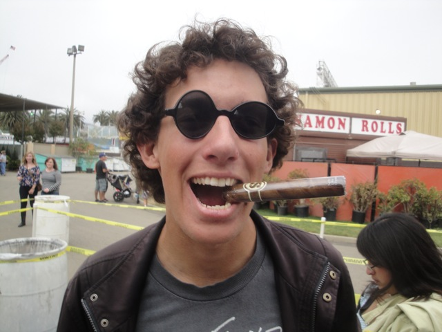
"Come in here, Dear boy, have a cigar."
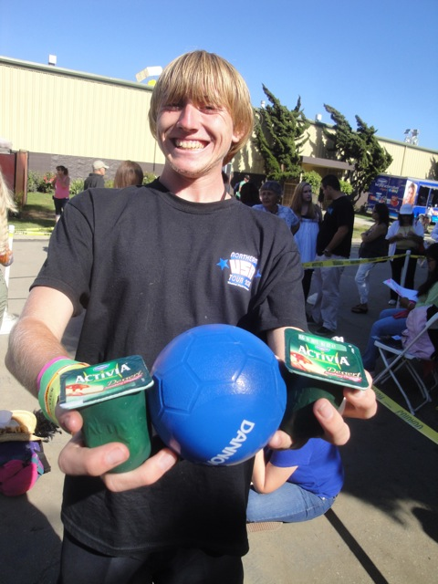
Sweet!!! While waiting in line for the Pat Benetar Concert, we were approached by people from Dannon and got free yogurt (very tasty) and a ball. =)
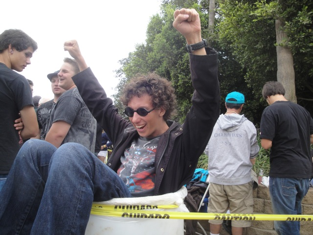
"Cody, you are such white trash."
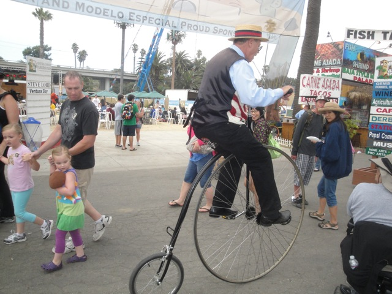
People who ride Pennyfarthers are awesome!!! =)
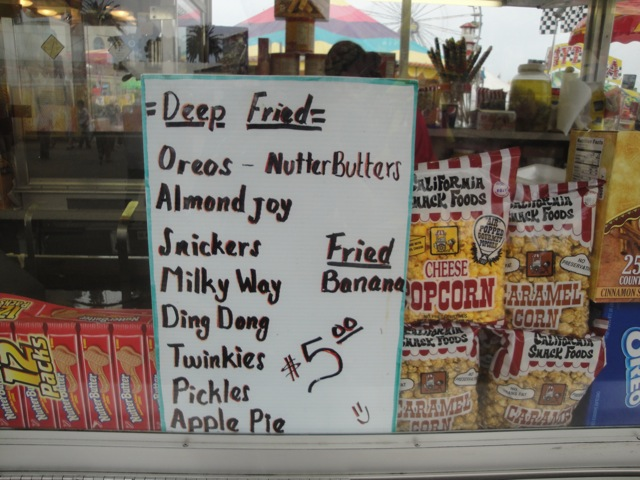
"Ooh. Lots of options for deep fried foods. What to get? What to get?"
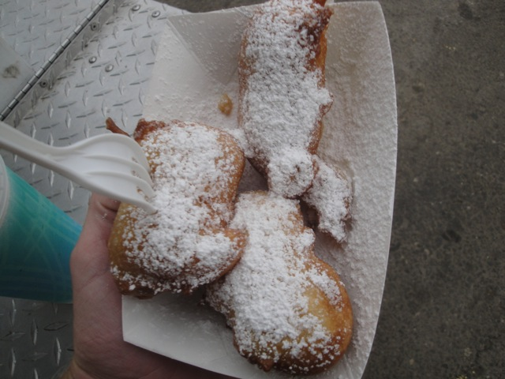
DUDE!!! THE DEEP FRIED NUTTER BUTTERS KICKED ASS!!!!!
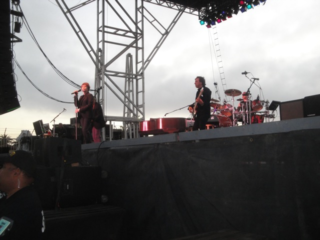
The Pat Benetar Concert was totally awesome!!!!! It was all about the music and she can still rock!!!!
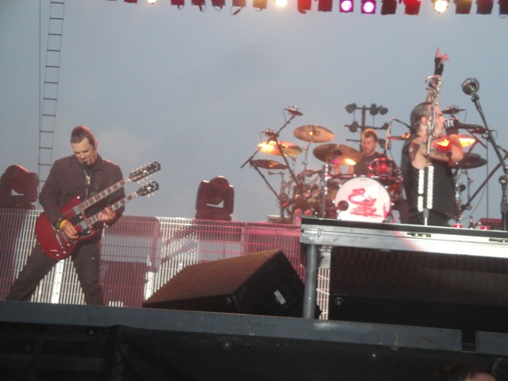
Three Days Grace was ok. They're good by today's standards, but today, the bar is set so phenomenaly low, that it is a disgrace to all good music out there.
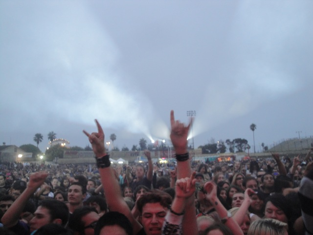
Though really. The band was just background noise compared to the crowd. They were LOUD!!!!! Just being in the crowd was like an insane ride. I kept getting shoved around by obsessive fans and whenever everyone jumped, I was forced against my own free will to jump with everyone. It was insane.
Well, the fair itself may have sucked ass, but I still had fun. And it did have bungee jumping and Pat Benetar. That's awesome. Though I'll be taking my official fair visit to the L.A County Fair in September.
Home